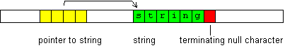
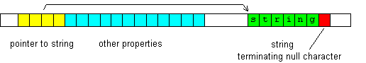

See also: string constants, using strings with functions, Unicode and UTF-8, strings with variables
A string is an array of characters. Used to store text. Each character is stored in memory as a single byte (in UTF-8 - 1 to 4 bytes). A byte is an amount of memory that can have 256 different values. A byte with value 0 ("terminating null character") is appended to the end. Other values are used for characters.
A string variable generally is (or includes) a pointer to a string. The pointer holds the address of the first character. The picture shows how whole string variable is stored in memory.

There are several types of string variables:
A variable of type str manages its string memory.
A variable of type lpstr does not manage string memory.
Variables of type BSTR are used for Unicode UTF-16 strings. They are used mostly with COM functions. They manage string memory (like str).
Sometimes variables of type word* also are used as Unicode UTF-16 strings. They don't manage string memory (like lpstr).
Variables of type VARIANT are interpreted as strings when they contain BSTR. They are used mostly with COM functions.
In C++ programming language and in MSDN Library, a pointer to a string is often called LPSTR, LPCSTR, char*, const char*, etc. A pointer to an Unicode UTF-16 string is often called LPWSTR, LPCWSTR, WCHAR*, OLECHAR*, etc. Also can be LPTSTR and similar.
Variables of type str are used to store and manipulate strings. A str variable holds a string in a variable-length automatically (re)allocated string buffer. The buffer is an array of bytes that the variable allocates somewhere in other memory location. Beside the pointer to the string buffer, a str variable has several other properties. All properties are automatically adjusted when performing string operations.

When you assign a string or numeric value to a str variable, that value is copied to the string buffer. Numeric values are automatically converted. Examples:
str s = "Cat" now variable s is "Cat" s = 5.75 now variable s is "5.75"
When you assign a str variable to a variable of other intrinsic type, the other variable receives the pointer value. The same is when you pass a str variable as a function argument. To convert a str variable to a useful numeric value, use val function:
str s = 45 now s is "45" int i = val(s) now i is 45
A single character can be accessed using [] operator:
str s = "Cat" int char = s[1] now char is 97 ('a' character code) s[0] = 66 now s is "Bat" (66 is 'B' character code) s[2] = 'r' now s is "Bar"
The str type supports operators = (assign), + (append) and - (prepend):
s = "Cat" now s is "Cat" s + " and Mouse" now s is "Cat and Mouse" s - "Dog, " now s is "Dog, Cat and Mouse"
Expressions like s1 = s2 + s3 cannot be used to join strings, because s2 and s3 in such expression are interpreted as numeric (pointers). Instead use s1.from(s2 s3) or s1=F"{s2}{s3}".
The str type also supports comparison operators = (equal, case sensitive comparison), ! (not equal, case sensitive comparison) and ~ (equal, case insensitive comparison):
if(s = "Cat") out "s is ''Cat''"
The str type has several member functions. Common syntax:
s.func(...)
Here s is a str variable; func is name of a member function; ... are parameters. You can declare variable and call function:
str s.function(...)
Most str functions return the str variable for which were called. Example:
str s.fix(GetWindowText(hwnd s.all(100) 100))
is equivalent to:
str s s.all(100) int i=GetWindowText(hwnd s 100) s.fix(i)
| lcase ucase | Make string lowercase or uppercase. |
| unicode ansi | Convert string to/from Unicode UTF-16. |
| escape | Replace escape sequences with characters, or vice versa. |
| encrypt decrypt | Encrypt, decrypt. |
| trim ltrim rtrim | Remove characters from the beginning or end. |
| set | Set part of string. |
| insert | Insert other string. |
| remove | Cut part of string. |
| replace | Replace part of string. |
| findreplace | Find and replace. |
| replacerx | Find and replace using regular expression. |
| addline | Append string as new line. |
| left right get geta | Get part of other string. |
| gett | Find and get n-th part of other string. |
| getl | Find and get n-th line. |
| getpath getfilename | Extract path or filename from full file path. |
| from | Create string from several parts (join). |
| fromn | Create string from several string or binary parts of specified length. |
| format, formata | Format string (create string that will contain values of variables). |
| all | Allocate or free string buffer. |
| fix | Set string length. |
| getwintext setwintext getwinclass getwinexe | Get window text, class name, program, set window text. |
| getclip setclip getsel setsel | Clipboard, copy, paste. |
| getfile setfile | Read or write file. |
| searchpath, expandpath | Find file and get full path; expand special folder. |
| dospath | Get short (DOS) path from long path or vice versa. |
| getmacro | Get macro text. |
| setmacro | Set macro text. |
| dllerror | Get dll error description. |
| timeformat | Format date/time string. |
| beg begi end endi mid midi | Compare part of string. |
| getstruct setstruct | Get/set variable of user-defined type. |
| swap | Exchange string with another variable. |
Although in most cases you will use str variables, in some cases it is better to use lpstr variables. Unlike str variables, a lpstr variable has no string buffer. It is only a pointer to a null-terminated string (see the first picture above). It does not manage (which means allocating memory) the string to which it points.
Like str and pointers, lpstr supports [] operator to access a single character.
Also supports operators =, + and -, but they modifies only the pointer, but not the string to which it points:
lpstr s = "abcd" now s is (points to) "abcd" s + 2 now s is (points to) "cd" s - 1 now s is (points to) "bcd"
You cannot use str member functions with lpstr variables.
You cannot assign a numeric value, except 0.
A str or lpstr variable can be null. It means that the pointer to string is 0, and string memory is not allocated. This happens:
Note that it is not the same as "". When a str variable is "", its length also is 0, but it has string buffer which is required to hold terminating null character.
Beside str member functions (listed above), you can also use global string functions. They can be used with str and lpstr variables. They are called like other global (non-member) functions. Example:
int lens lpstr s="abc" lens=len(s)
| len | Get number of characters. |
| empty | Is string empty? |
| val | Get numeric value. |
| numlines | Get number of lines. |
| find, findw | Find substring, find whole word. |
| findt, findl | Find n-th token, find n-th line. |
| tok | Split. |
| findc, findcr | Find character, find character from right. |
| findcs, findcn | Find character that is or isn't in the specified set of characters. |
| findb | Find substring in binary data. |
| findrx | Find one or all substrings using regular expression. |
| matchw | Compare strings using wildcards. |
Global string functions are added to the string category. There you also can find several useful functions from dlls. To compare strings, you can use StrCompare and other functions. To get information about a dll function, press F1.
String functions are not thread-safe. Don't use a variable in multiple threads simultaneously. It can damage data and make QM unstable. You can use lock to prevent it.